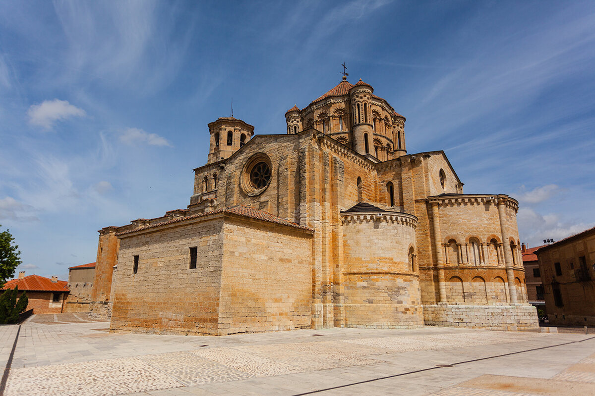

Que visitar en Zamora
En esta sección se han seleccionado sólo algunos de los infinitos lugares que se pueden visitar en la capital o en cualquiera de sus bellos pueblos.
Catedral

De arquitectura románica del Duero, su cimborrio revestido de escamas de piedra muestra una clara influencia bizantina. En su interior, se encuentran preciosas tallas religiosas en diversas capillas, así como la Sillería del Coro (1502-1505) ubicada en la nave central y realizada en madera de nogal por el taller de Juan de Bruselas.Uno de los monumentos más importantes de la ciudad.
Museo de Semana Santa
Creado por la Junta Pro Semana Santa en 1957 con el fin de conservar y exhibir al público los distintos pasos que desfilan por las calles zamoranas durante nuestra Semana de Pasión. Se abrió al público el 9 de septiembre de 1964. El Museo de Semana Santa, ubicado en el casco antiguo de la ciudad, alberga treinta y siete "pasos" que ofrecen secuencialmente el relato de la Pasión de Cristo, creados por imagineros tales como Ramón Álvarez, Mariano Benlliure, Quintín de la Torre, Aurelio de la Iglesia y Ricardo Segundo entre otros.
Colegiata de Toro
Su nombre completo es Colegiata de Santa María la Mayor y data del siglo XII. Cuentan que, previsiblemente, fue construida sobre un antiguo templo prerrománico, bajo el reinado de Fernando II de León.En este monumento destaca su fachada septentrional, así como su cimborrio que tiene una clara influencia de las catedrales de Zamora y Salamanca.
Lago de Sanabria

Catalogado como Sitio de Interés Natural en 1946, Paraje Pintoresco en 1953 y Parque Natural en 1978, con el objetivo de preservar su morfología natural, flora y fauna autóctona. El Parque Natural del Lago de Sanabria ocupa 22.365 hectáreas y contiene el lago glaciar más grande de la península (368,5 ha). El lago cuenta con una superficie que abarca 1,5 km de ancho por 3 km de largo y una profundidad de 53 m, y es una zona fantástica para amantes de la naturaleza y otro de los lugares imprescindibles que ver en Zamora.